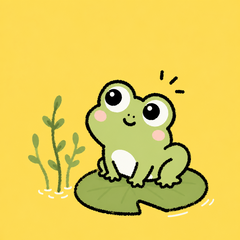

在飞书里说一句「帮我写《…》」，它按「选题 → 规律 → 写作 → 配图 → 小红书文案 → 复盘」六个环节帮你把内容生产跑完——每个需要拍板的节点，它都停下来等你。
点击每一环，看它在环节里做什么、遵守什么规则。这套流程来自作者真实工作流（2026-08-10 逐环节访谈挖掘）。
它把「边界」写进了岗位规范——哪些是它的职责，哪些坚决不碰。
每个需要作者参与的节点，都是一道人工兜底闸门——AI 无能力或不该替人做的，一律停下交人。
不用夸张的大模型堆料——用趁手的工具编排成一套可复制的岗位。

每天 2 小时，共 6 天时间，手把手带你打造个人知识库——AI 第二大脑，构建内容创作系统，成为 Agent 架构师。
我给自己搭了一个 AI 员工，24 小时在飞书里在线。
AI 员工不仅仅是一个聊天机器人，它带有我个人的整套工作流程。
我只需要跟它说：「帮我写《XX》」，它就走完「选题 → 规律 → 写作 → 配图 → 小红书文案 → 复盘」六环节，把一篇文章从想法推到排好版。每个需要我拍板的节点——素材包、标题、成稿、配图、复盘——它都停下来等我，绝不擅自往前。
从最初让 AI 访谈我、把我脑子里的判断一条条挖出来，到生成第一张岗位卡，再到整套系统跑通，我一共花了半个多月时间。也是我一年多以来用 AI 写东西、整理我的知识库的工作流沉淀。
把日常沟通、想法、会议记录、看到的课程、文章……经过清洗、沉淀，放进自己的知识库。
沉淀下来的是你自己的数据资产：写文章、开会、做决策，都从里面取。它解决「装了 AI 工具不知道拿来干什么」——这是人人用得起来、最快见效的 AI 场景，也是后面所有东西的原料库。
六个环节，每个环节一套规矩：选题从选题池里挑，规律从对标内容里提炼，写作走素材包 → 访谈 → 初稿 → 成稿的流程，配图批量生成后由你质检，发布文案自动附带，发布后自动复盘。
一篇文章从想法到成稿，全程有流程、有版本、有记录。
这是「Agent 架构师」的核心手艺：把你自己（或你的团队）的做事流程，梳理成 AI 能执行的规矩。岗位卡里写清什么算干得好、什么不许干、什么情况必须停下来问人。
有了它，你不只会搭内容系统——任何流程，都能照这个方法变成 AI 员工。
这套系统是这么搭起来的，6 天里我带你走同样八步。
每一步的提示词，训练营里直接给你，可以直接拿来用。
| 天 | 内容 | 对应八步 |
|---|---|---|
| 第 1 天 | 环境准备 + 搭个人知识库（记录 → 清洗沉淀 → 复用） | 前置 |
| 第 2 天 | 写岗位卡 + AI 访谈挖你自己的判断 | 一、二 |
| 第 3 天 | 拆人工流程 + 画流程图 | 三、四 |
| 第 4 天 | 把流程装进 skill（一个环节一个） | 五 |
| 第 5 天 | 拿一篇真实文章跑通 + 复盘数据 | 六、七 |
| 第 6 天 | 汇总成 Agent 工作流 + 答疑收尾 | 八 |
大家好，我是一心，前高德地图解决方案架构师，在金融科技、零售行业干了 10 多年，角色是甲方业务和技术之间的桥梁；现在是 AI 原生创业公司的创始人，公司全部业务交给 AI Agent，每人都有自己的 AI 员工。曾经帮我的客户（一百多号员工的乡村运营企业）梳理过哪些业务适合搭 Agent 提效。
上面这套系统，是我自己从零搭起来、每天都在用的。
我能带给你的，是三样东西：
岗位卡、判断挖掘、skill 封装、复盘迭代——每一步我都踩过坑、修过路。你不需要再从零摸索一遍，照着走就行。
六环节的提示词、岗位卡模板、工作流格式，训练营里全部给你，照着填你自己的内容。
架构师干了 10 多年，自己创业又用了一年多 AI，我知道怎么把「AI 能干什么」翻译成你工作里的话——也知道诚实告诉你边界：哪些 AI 能替你干，哪些必须你拍板。